评测统一设定：HUGSIM 与 NAVSIM 归为同一档，共用统一模型基线 P2H（即 op_parity P2 基础加可行驶区域 SDF 足迹铰链损失 λ=10，checkpoint P2H10-F-s0/s1，详见决策 148）。HUGSIM 横向执行层固定为模型自身 plan 在 0.5 到 1.5 秒窗口内的平均曲率 spec_plan_smooth（决策 149）。对照参考为开源 SOTA 模型 WA-JEPA 与出厂模型（shipped，即 openpilot Cinque / P0）。
| 基准评测集 / 细分切片 | 出厂 shipped (P0) | P2（输入对齐微调） | P2H（基线 P2+hinge） | WA-JEPA (SOTA) | RMH10（P2H10 + replay hinge）及 RMH10 − P2H [95% CI] | WA-JEPA − P2H 差距 [95% CI] |
|---|---|---|---|---|---|---|
| navtest（全部 12 146 token，W 帧） | 80.51 | 88.21 | 88.67 (88.58 / 88.77) | 91.71 | 89.19 (89.15 / 89.24) +0.52 [+0.38, +0.67] | +3.04 [+2.32, +3.74]（RMH10：+2.52） |
| navhard 综合（225 组，G 帧） | 33.54 | 30.34 | 31.84 (31.40 / 32.28) | 35.41 | 32.09 (32.22 / 31.96) +0.25 [−0.62, +1.23]（不显著） | +3.57 [−0.21, +7.57] |
| - navhard 阶段 1（开环日志） | 71.79 | 73.13 | 74.73 | 81.90 | 74.52 −0.21 [−1.17, +0.69] | +7.17 [+2.54, +12.27] |
| - navhard 阶段 2（偏移起点） | 47.08 | 42.44 | 43.04 | 43.53 | 44.02 +0.97 [−0.10, +2.17] | +0.49 [−0.86, +1.84] |
| HUGSIM 64 全部（HD × 100） | 26.3 (exam) / 29.4 (spec) | 39.6 (exam) / 39.3 (spec) | 43.2 (smooth) (40.0 exam / 39.5 spec) | 45.1 (45.06) | 43.5 (43.7 / 43.3) +0.2 [−1.9, +2.7]（不显著） | +1.9 [−5.4, +9.8]（不显著） |
| - HUGSIM 转弯路线（turn23，23 场景） | n/a | n/a | 35.0 (smooth) (27.8 spec) | 44.2 (44.17) | 33.6 −1.6 [−4.0, −0.1] | +9.2 [−2.1, +20.5] |
| - HUGSIM 直行路线（straight41，41 场景） | n/a | n/a | 47.8 (smooth) (46.1 spec) | 45.6 (45.56) | 49.0 +1.1 [−1.7, +5.0] | −2.2（P2H 领先 2.2 分） |
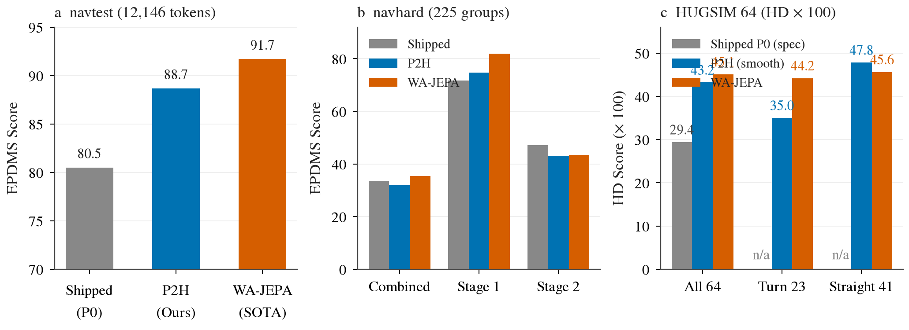
用户观察到的直觉现象是「车转不过弯，冲出道路」。
在 HUGSIM 中，该现象完全真实存在，典型案例为 scene-570_770-easy-00（KITTI-360 丁字路口）：P2H 以 12–13 m/s 的高速直冲路口，模型规划的 plan 一直保持笔直，直到距路沿仅剩 1 秒时才急剧打方向，导致车辆以近 10 m/s 冲上对角路沿；exam 预设直接跟踪相同迟钝的 plan 也同样撞上路沿；而 WA-JEPA 面对相同指令与自车历史，在弯前 26 米处即表现出减速至 2.7 m/s，平顺转过路口（推测其视觉特征能更早感知路口拓扑）。
然而在真实日志开环评测 navtest 上，失败形式截然相反：车辆不是「转不过去」，而是切内角出界（典型案例 dac-45935e）。
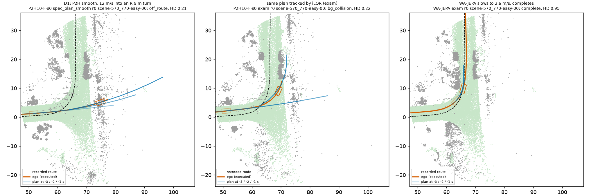
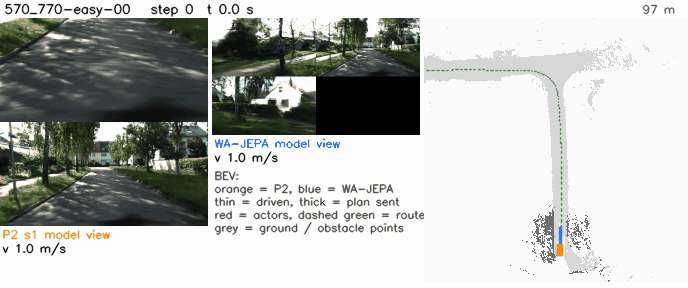

| 基准评测集 | 该桶失败样本定义与发生率 | (a) 替换为 WA-JEPA 得分 [95% CI] | (b) 替换为真值/参考轨迹 | (c) Shapley 差距份额 [95% CI] | WA-JEPA 在该桶同一单元失败率 |
|---|---|---|---|---|---|
| navtest | 日志未来曲率半径 R < 15 m 且 DAC < 1：P2H 10.4%（172/1653 token）vs WA 3.3%（54/1653） | 1.04 [0.73, 1.37] | 1.28 [0.92, 1.66] | 0.87 [0.53, 1.22]（DAC 占 0.83） | 17% [11, 25]%（P2H 高度特异） |
| navhard（综合） | PDM 参考路径 R < 15 m 且 DAC < 1：P2H 36%（662/1819）vs WA 31%（565/1819） | 3.46 [2.04, 5.06] | 7.48 [5.24, 9.93] | 阶段 1: 0.81 / 阶段 2: 0.97 [0.32, 1.56] | 74% [69, 79]%（两模型高度共享） |
| HUGSIM 64 | 背景碰撞（bg）或偏离路线（off_route）且路线 R < 15 m：共 5 个场景（全部位于 turn23） | 2.7 [0.2, 6.2] HD 分 | 1.3 [0.0, 3.5] | 5.5 [1.2, 10.6] HD 分 | 2 / 5 场景失败 |
ego_history_probe.md，368 个急弯接近 token）实测结果表明：将自车历史置换为匀速历史（cv），P2H 规划的 4 秒距离变化仅为 +0.13 m [−0.35, +0.56]（WA-JEPA 为 +0.04 m），置信区间包含 0 且未达预登记的 +0.5 m 门槛；对比匹配直行对照（T − CT），差异仅 +0.58 m [−0.13, +1.26]（CI 亦跨越 0）。通道消融证实历史中的减速信息完全经由 t0 处的 ax/ay 加速度输入进入模型（仅将 ax=ay 置零即重现全部效应 +0.08 m，位姿间距变化 ≤ 0.03 m），P2H 对历史的敏感度是 WA-JEPA 的 1.4–2.1 倍，但在转弯与匹配直行上同样存在（T − CT +0.58 [−0.13, +1.26]，CI 跨 0，未见转弯特异性）。假说未获支持：navtest 弯前减速并非依靠历史位姿；该探针对 HUGSIM 一侧既不证实也不排除（HUGSIM 一侧见下条）。数据来源：experiments/op_parity/results/ego_history_probe.md（368 / 129 个 token，T / P 集，CI 约 ±0.7 m）。experiments/op_parity/results/hugsim_ax_probe.md，5 个急弯场景 + 5 个快直道对照）实测表明：在模型输入中将 ax 置零后，急弯参考点入弯速度中位数仅微降 −1.09 m/s（均值 −0.40 m/s，3/5 降幅 > 1 m/s，另 2 个场景反而更快 +0.59/+1.87 m/s），入弯速度仍高达 6.4–10.4 m/s（对比 WA-JEPA 的 2.6–2.8 m/s），5 个急弯场景全军覆没（仍全为撞路沿或出界，HD 变化仅 +0.008）；同时在 5 个快直道对照上同样出现减速（中位 −1.43 m/s），且 scene-0013-medium-00 置零后停在 4.4 m/s 并撞背景（HD 由 1.00 跌至 0.16，损伤对照；原因未查：源文件明确未查看该 run，低速起步问题还是场景效应未定）。按预登记规则判定为「弱（weak）」且非转弯特异（5 + 5 场景，无 CI）。ax 正反馈不是急弯快速入弯的主要机制（去掉后入弯速度仍为原来的 84–91%）；剩余候选为模型自身的速度 plan：视觉预判（visual anticipation），以及 plan 一直加速到指令切换（转弯前 2.5–6.6 m）的指令时序（four_dirs.md），决策 159 将前者归表征线。数据来源：experiments/op_parity/results/hugsim_ax_probe.md。turn_train.md）在 > 20° 弯道上对 WA-JEPA 差距闭合仅 0.01–0.02（CI 均包含 0）；在 > 45° 弯道上得分虽微涨 +0.97，但 DAC 失败率未变（−0.03 pp [−0.86, +0.91]），反而在直道与缓弯上付出代价值（缓弯 −0.75 分，全量 DAC 失败增加 +0.29 到 +0.36 pp）。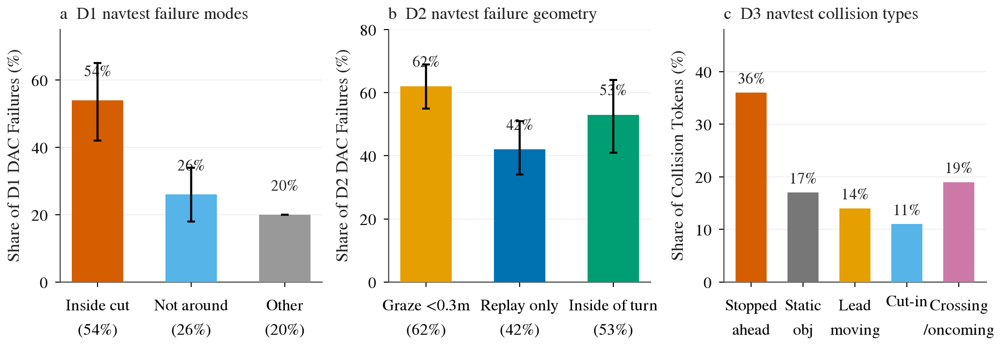
（1）Replay hinge（决策 161，已完成）。把可行驶区域 hinge 从 8 个原始 plan 位姿换到 devkit LQR 跟踪器实际回放的足迹上（torch 可微代理，300 token 角点误差 p95 1.0 cm、DAC 判定 100% 一致），并在 logged 转角 > 20° 的 token 上给前角加 0.5 m 余量（RM）。三道门禁全过：离线 thin decoder 使转弯 token DAC 失败 −4.6 pp（门槛 0.4）；P2 pilot EPDMS +0.43（门槛 +0.2）；全量 RMH10 × 2 seed 如下表。预登记预期 navtest +0.2 到 +0.35，实得 +0.52，超出预期上沿。
| 基准 | RMH10 | P2H10 | RMH10 − P2H10 [95% CI] |
|---|---|---|---|
| navtest EPDMS | 89.19 (89.15 / 89.24) | 88.67 | +0.52 [+0.38, +0.67]；DAC 失败每 seed −0.51 / −0.52 pp |
| navtest > 20° EPDMS | 81.3 / 81.4 | 80.3 / 80.3 | +1.05 [+0.53, +1.52] / +1.07 [+0.62, +1.55]（DAC 失败 −1.17 / −1.08 pp） |
| navtest > 45° EPDMS | 79.49 | 78.61 | +0.88 [+0.31, +1.38]（与 WA-JEPA 仍差 7.9 分） |
| navhard 综合（G） | 32.09 | 31.84 | +0.25 [−0.62, +1.23]（不显著） |
| HUGSIM 64 HD（spec_plan_smooth） | 0.435 | 0.433 | +0.002 [−0.019, +0.027]（不显著）；turn23 −0.016 [−0.040, −0.001] |
机制：对 devkit 跟踪器的预补偿，不是离路沿更远。seed 0 的出界分解（RMH10 − P2H10，pp）：
| token 集 | 回放出界（= DAC 失败） | 原始 plan 出界 | 仅回放出界 | 仅原始 plan 出界 |
|---|---|---|---|---|
| 全部 | −0.51 [−0.71, −0.32] | +0.34 [+0.16, +0.52] | −0.49 [−0.68, −0.32] | +0.35 [+0.18, +0.54] |
| > 20° | −1.17 [−1.67, −0.63] | +0.98 [+0.45, +1.52] | −1.20 [−1.69, −0.71] | +0.95 [+0.49, +1.40] |
| > 45° | −0.99 [−1.72, −0.15] | +1.12 [+0.36, +1.92] | −0.92 [−1.51, −0.32] | +1.19 [+0.47, +1.92] |
（2）表征线（决策 160，用户已暂停）。设计问题：急弯、擦边与一部分碰撞里不能由 head 目标解释的部分，是否由前视表征决定。Stage 0 用同一个 thin decoder（2 层 MLP，hinge λ 10，navtrain s2–s4 训练）在 navtest 全部 3 154 个 > 20° token 上读 DAC 失败率，Stage 1 在 policy pilot 里把候选 token 作为 adapter memory。
| Stage 0 输入（> 20° token，n = 3 154） | DAC 失败 % [95% CI] | 闭合 c [95% CI] | 判读 |
|---|---|---|---|
| E（仅 ego） | 19.91 [17.21, 22.24] | −2.21 [−3.68, −1.34] | |
| V（Cinque 冻结视觉 token） | 10.59 [8.73, 12.46] | 基线 | |
| WA-Cf（WA-JEPA 在 navtrain 上微调后的前视 encoder） | 6.88 [5.49, 8.41] | 0.88 [0.60, 1.09] | |
| V + WA-Cf | 6.37 [5.19, 7.68] | 1（定义） | 阳性对照 +4.22 pp，通过 |
| VJ21（冻结的原版 V-JEPA 2.1） | 11.79 [9.58, 13.88] | −0.29 [−0.86, 0.12] | 单独不比 Cinque 好 |
| V + VJ21 | 9.13 [7.31, 10.93] | 0.35 [0.12, 0.61] | 未过线 0.5 |
| X4（Cinque stage 4 前特征） | 9.99 [8.09, 11.94] | 0.14 [−0.06, 0.37] | 只解冻 stage 4 不够，要整段 encoder |
| Stage 1 policy pilot（2 seed 均值） | H0（P2H pilot 配方） | MW（H0 + WA-Cf memory）MW − H0 [95% CI] | MW，测试时屏蔽 memory |
|---|---|---|---|
| navtest EPDMS | 87.92 | 88.86，+0.95 [+0.47, +1.37] | 87.31，−0.60 [−0.85, −0.37] |
| > 20° DAC 失败 % | 9.56 | 8.23，−1.33 pp [−2.45, −0.18] | 9.59，+0.03 [−0.51, +0.57] |
| > 45° DAC 失败 % | 10.15 | 10.02，−0.13 [−1.60, +1.62]（不动） | |
| NC + TTC 失败 % | 2.46 | 1.84，−0.63 pp [−0.90, −0.34] | 2.77，+0.31 [+0.13, +0.50] |
| EP | 87.03 | 87.12，+0.09 [−0.04, +0.22] |
成本（已实际发生）：表征 Stage 0 约 0.5 卡时 GPU 加约 40 分钟 CPU 评分，Stage 1 约 0.5 卡时 GPU；若重启，Stage 2 约需 WA-Cf 其余特征 20–30 卡分钟、全量 2 seed 各约 1 小时，HUGSIM 需在 server 里加 WA 前视 encoder（约 1 个工程日 + 3–4 卡时）。
宽弯与缓弯（曲率半径 R ≥ 15 m）的失败绝大多数发生在 navtest 开环上，表现为车身边缘以极浅的深度越过可行驶区域边界（图七与图八）。在 HUGSIM 闭环中，该类场景仅有 2 例（例如 scene-090-hard-01），且全为晚打方向擦碰道路外侧，车辆入弯速度正常（3.7 m/s），转向响应较路线晚 0.75 秒。事先怀疑的「平滑时间窗口（0.5–1.5 s）过大导致提前切入内侧」假说被实际数据完全否定。
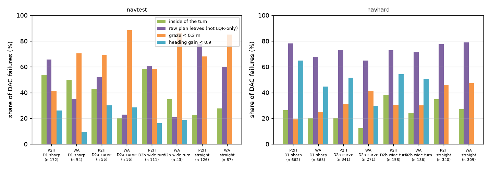

| 基准评测集 | 该桶失败样本定义与发生率 | (a) 替换为 WA-JEPA 得分 [95% CI] | (b) 替换为真值/参考轨迹 | (c) Shapley 差距份额 [95% CI] | WA-JEPA 在该桶同一单元失败率 |
|---|---|---|---|---|---|
| navtest | 转弯且 R ≥ 15 m 且 DAC < 1：P2H 5.2%（166/3189）vs WA 2.4%（78/3189） | 1.00 [0.73, 1.30]（缓弯 0.35，宽弯 0.65） | 1.27 [0.96, 1.60] | 0.66 [0.40, 0.96] | 20% [13, 28]%（P2H 特有） |
| navhard（综合） | PDM 参考路径 R ≥ 15 m 且 DAC < 1：P2H 29%（500/1753）vs WA 23%（407/1753） | 4.22 [2.54, 6.26] | 6.75 [4.48, 9.36] | 阶段 1: 3.56 / 阶段 2: 0.59 [0.16, 1.05] | 65% [58, 70]%（共享为主） |
| HUGSIM 64 | 背景碰撞且路线 15 ≤ R < 50 m：共 2 个场景 | 1.0 [0.0, 3.1] HD 分 | 1.4 [0.0, 4.0] | 2.7 [0.0, 6.9] HD 分 | 1 / 2 场景失败 |
与方向一共享 Replay hinge 方案（plans/2026-10-07-replay-hinge-prereg.md）：将 hinge 置于 torch 可微实现的 devkit LQR 跟踪器回放足迹之上。结果（experiments/op_parity/results/replay_hinge.md，决策 161）：全量 navtest +0.52 [+0.38, +0.67]，回放专属出界 −0.49 pp，原始 plan 出界 +0.34 pp，HUGSIM 闭环不动（+0.002）。结论：回放诱发的擦边在训练端被压低，但靠的是预补偿 devkit 跟踪器，属评分器相关增益，不应读作宽弯余量变大。HUGSIM 闭环端无改动。
碰撞是 HUGSIM 闭环丢分的最主要来源（丢掉 57 分中的 43 分），但需要严格区分两类性质完全不同的场景：
（1）不可避免的脚本对向车（D3a）：典型如 scene-2510_2710-extreme-00，对向脚本车辆以 2–4 m/s 迎面驶来，P2H 减速不及迎头相撞；WA-JEPA 提前 3 米完全停住，但对向车依然直撞上来导致碰撞。此类场景非反应式对向车属于仿真脚本设定，仅靠停车策略无法规避。
（2）前方静止/慢速前车（D3b）：典型如 scene-0254-extreme-00，前方存在一辆完全静止的障碍车，P2H 的 plan 终点直接生成在静止车体内；在 navtest 上，典型如前方静止车追尾（nc-248801）与跟车紧急制动/TTC 冲突（ttc-3f265d）。
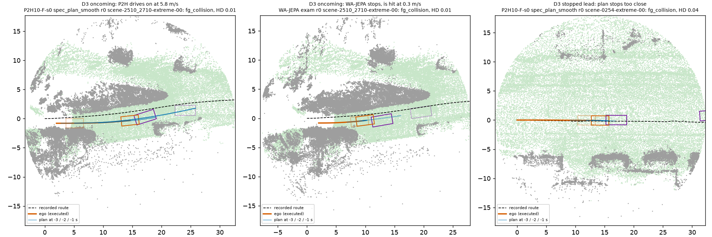
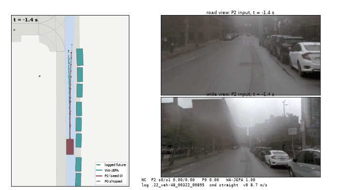
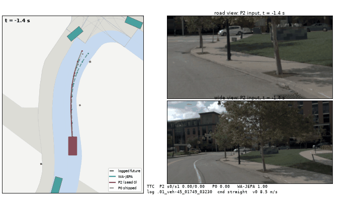
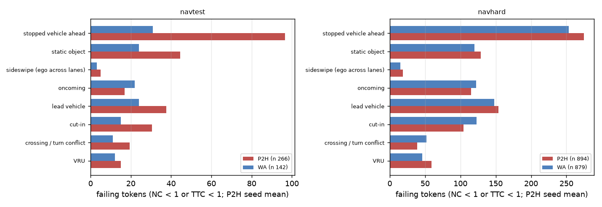
| 基准评测集 | 该桶失败样本定义与发生率 | (a) 替换为 WA-JEPA 得分 [95% CI] | (b) 替换为真值/参考轨迹 | (c) Shapley 差距份额 [95% CI] | WA-JEPA 在该桶同一单元失败率 |
|---|---|---|---|---|---|
| navtest | NC < 1 或 TTC < 1：P2H 2.2%（266 token）vs WA 1.2%（142 token） | 1.16 [0.88, 1.44] | 1.68 [1.27, 2.09] | 0.87 [0.56, 1.17]（NC 0.60，TTC 0.17） | 30% [23, 36]%（P2H 高度特异） |
| navhard（综合） | NC < 1 或 TTC < 1：P2H 15.1%（894）vs WA 14.9%（879） | 2.56 [1.29, 4.11] | 6.29 [4.37, 8.47] | 阶段 1: 0.60 / 阶段 2: 0.81 [0.23, 1.45] | 81% [77, 84]%（高度共享） |
| HUGSIM 64 全部车辆碰撞 (fg) | 前景车辆碰撞：共 31 个场景（128 个 cell 中占 60 次） | 5.0 [0.4, 10.5] HD 分 | 8.6 [4.0, 14.2] | 42.8 [31.6, 53.9] HD 分 | 24 / 31 场景碰撞（WA 亦挂） |
| - D3a 对向 / 横穿车 | 相对航向角差 ≥ 60° 的运动障碍车：共 21 个场景 | 1.3 [−1.2, 5.1] HD 分 | 3.8 [1.2, 7.1] | 28.4 [18.4, 39.0] HD 分 | 18 / 21 场景 WA 亦撞 |
| - D3b 前方静止 / 慢速前车 | 前方纵向障碍车（车速 < 0.5 m/s 或同向慢行）：共 10 个场景 | 3.8 [0.2, 8.5] HD 分 | 3.5 [0.5, 7.6] | 13.0 [5.9, 20.9] HD 分 | 6 / 10 场景 WA 通过 |
修复措施与分工：
1. Agent-occupancy / TTC hinge 损失（已在 pilot 规模关停）（plans/2026-10-07-agent-hinge-prereg.md、results/agent_hinge.md、决策 158）：在 P2H 训练中加入对日志车辆框重叠的 SDF 铰链惩罚。实测结果表明，该方案未能达到预登记的 pilot 门禁指标：NC+TTC 失败降低仅 −0.16 pp [−0.26, −0.08]（门槛为 ≤ −0.3 pp），EPDMS 提升仅 +0.18 [+0.05, +0.31]（门槛为 ≥ +0.2），EP −0.10 通过防倒退门禁（≥ −0.2）。改善虽真实存在且在前方静止车 token 上 EPDMS 提升 +2.26 [+0.30, +4.50] 分、超速子集 NC+TTC 失败降低 −2.9 pp，但总改善幅度仅为门槛的一半；事后分析显示训练行上的 agent loss 恒定在 ~0.002 无法进一步下降，残余 NC 失败中 73% 仍与所覆盖的物体框重叠（对照为 75%），且深重叠时 SDF 近似梯度倾向侧推而非纵向减速，提示在冻结视觉特征下 plan head 难以在 pilot 规模学到泛化约束，与决策 147 的表征解释一致，但本实验未测该拆分（源文件 agent_hinge.md 明确未做解冻测试）。按预登记规则，不进入全量规模训练，已在 pilot 规模正式关停（Closed）。
2. Lead 停车余量执行层规则（Lead margin，已关停）（plans/2026-10-07-lead-margin-prereg.md、results/lead_margin.md、决策 157）：离线回放表明该规则未能通过两榜预登记门禁：在 HUGSIM D3b 上仅 1/10 场景转换（实质解决 0/10，最后 0.5 秒避开率仅 0.07/0.11）；在 navtest 全量上 EPDMS 倒扣 −0.75 [−0.96, −0.55] 分，碰撞与 TTC 失败由 531 增至 565（两 seed 合计；每 seed 修好 16–18 个、新增 34 个，新增多为低速排队 token 被提前刹停，其碰撞类型未提取）。离线回放固定存档轨迹，闭环里车会更早减速，最后 0.5 s 读数偏悲观，但这是预登记闸门。按预登记要求正式关停（Closed）。
3. 总结与状态：撞车方向上训练 loss 侧（agent hinge）与执行层后处理侧（lead margin）均未达门禁要求而关停。剩余线索在表征：WA-Cf memory 诊断臂使 NC + TTC 失败 −0.63 pp [−0.90, −0.34]（representation.md），但 WA-Cf 非方法，表征线已暂停（方向一第 4 节），当前没有在跑的撞车修复。
依据决策 131 规则（前视相机平均亮度 luma 中位数 < 50 为夜间，≥ 120 为白天）： 在当前 HUGSIM + NAVSIM 档的全部三个基准评测集中，夜间单元数量全部为 0（表四）。navtest 最暗 log 亮度为 56.7，navhard 最暗为 55.8，HUGSIM 64 最暗场景为 65.0。目检各评测集最暗的片段（图十三），全部为白天的阴天、建筑物阴影或树荫，不存在真实的夜间行车数据。

低光敏感性探针分析：
| 基准评测集 | 总评测单元数 | 夜间单元数 (luma < 50) | 最暗单元 luma | 夜间桶差距贡献 (Oracle a) | 最暗 10% 样本差距差异 [95% CI] |
|---|---|---|---|---|---|
| navtest | 12 146 token（136 logs） | 0 (0.0%) | 56.7 | 0.00 分 | −0.06 [−2.45, +2.34] |
| navhard（阶段 1） | 225 组（76 logs） | 0 (0.0%) | 55.8 | 0.00 分 | −5.38 对 +6.37（微暗样本反优） |
| HUGSIM 64 | 64 场景 | 0 (0.0%) | 65.0 | 0.00 分 | 不适用 |
结论：HUGSIM + NAVSIM 档不存在夜间数据，夜间方向的损失为 0。方向四移出本档，归入 Waymo Open Dataset (WOD) 档独立研究。在决策 131 中，WOD 包含 28% 真实夜间序列，openpilot 在夜间真实退化达 ADE@3s +0.43 m。
本节三个模型臂的训练数据不同，读数前先分清：P2H 在 NAVSIM navtrain 上做输入对齐微调，原样搬到 WOD 评测（跨域迁移，第 1–3 小节）；WP2 用同一 P2 配方在 WOD train 上重训（第 4 小节）；WP1 是 WP2 的输入置零对照。掉分的是前者，重训的 WP2 没有掉分。
评测设置：使用现行 WOD serving harness，在 WOD-E2E val（479 个评分帧，1 437 个总帧）上对比出厂 shipped Cinque 与 P2H10（两个 seed 均值）。真实 10 Hz 视频帧重复两次以模拟 20 Hz 输入（0.2 s 帧对，无几何合成）；通过 intent_bias 注入自车状态与指令。序列 bootstrap（B 4 000）。
| 模型臂 / 切分 | RFS (0-10 分，越高越好) | d RFS vs shipped [95% CI] | ADE@3s (m，越低越好) | d ADE@3s [95% CI] | ADE@5s (m) | d ADE@5s [95% CI] |
|---|---|---|---|---|---|---|
| 出厂 shipped Cinque（基线复现） | 8.005 | 参考基准 | 1.041 | 参考基准 | 2.117 | 参考基准 |
| P2H10-F-s0 | 7.718 | −0.287 [−0.496, −0.085] | 1.312 | +0.271 [+0.215, +0.327] | 2.653 | +0.536 [+0.436, +0.637] |
| P2H10-F-s1 | 7.699 | −0.306 [−0.523, −0.097] | 1.337 | +0.296 [+0.238, +0.354] | 2.683 | +0.567 [+0.462, +0.672] |
| P2H 两个 seed 均值 | 7.708 | −0.297 [−0.501, −0.094] | 1.324 | +0.284 [+0.227, +0.341] | 2.668 | +0.551 [+0.449, +0.655] |
| - 真实夜间（133 评分帧） | 7.404（出厂 7.610） | −0.207 [−0.717, +0.325] | 1.312（出厂 1.308） | +0.004 [−0.102, +0.106] | 2.635（出厂 2.459） | +0.177 [−0.004, +0.352] |
| - 真实白天（325 评分帧） | 7.740（出厂 8.100） | −0.360 [−0.608, −0.118] | 1.338（出厂 0.921） | +0.417 [+0.351, +0.486] | 2.694（出厂 1.952） | +0.742 [+0.618, +0.874] |

| 诊断探针臂（基于 seed 0 权重） | RFS 得分 | d RFS vs shipped [95% CI] | ADE@3s (m) | d ADE@3s [95% CI] | 核心读法与推论 |
|---|---|---|---|---|---|
| 主线 P2H-s0（全输入） | 7.718 | −0.287 [−0.496, −0.085] | 1.312 | +0.271 | 基线读数 |
| bias = 0（P2H 权重，输入偏置置零） | 7.984 | −0.021 [−0.056, +0.014] | 1.098 | +0.058 [+0.049, +0.066] | P2H 微调后的 plan 权重在 WOD 上表现中性，损失经 adapter bias 进入；bias 内部的归因见第 3 小节 |
| 指令置零（全部设为 UNKNOWN） | 7.625 | −0.380 [−0.605, −0.164] | 1.300 | +0.259 | 指令通道非退化原因（置零后甚至略降） |
| 加速度 ax = ay = 0 | 7.731 | −0.274 [−0.486, −0.070] | 1.425 | +0.385 | 加速度设为 0 显著拉大 ADE，但不改变 RFS |
| 从位置反推加速度 ax，ay = 0 | 7.732 | −0.273 [−0.469, −0.086] | 1.171 | +0.131 [+0.077, +0.185] | 位置推导加速度将 ADE 显著拉回 0.14 m，但 RFS 仍差 −0.27 |
纯推理诊断，干预清单与归因规则在读分前写定（「serving 时减 navtest 平均 bias」一臂为事后加入）。P2H 的 bias 拆成两部分：与输入无关的常数项（WOD 帧上的均值，rms 1.03，整个 bias rms 1.13）和随 ego 变化的剩余部分（rms 0.45）。下表为两 seed 均值，出厂 RFS 8.005、ADE@3s 1.041 m。
| 干预臂 | RFS | d RFS vs shipped [95% CI] | d ADE@3s (m) | 读法 |
|---|---|---|---|---|
| P2H 原样 | 7.708 | −0.297 [−0.499, −0.093] | +0.284 | 基线读数 |
| bias = 0 | 7.985 | −0.020 [−0.055, +0.016] | +0.057 | 权重中性 |
| 只留随 ego 变化的部分（去均值） | 8.102 | +0.097 [+0.009, +0.194] | −0.083 | ego 输入通道本身有用，胜出厂 |
| 只留常数项（WOD 均值） | 6.895 | −1.110 [−1.372, −0.851] | +0.842 | 损失的来源 |
| 换成 navtest 平均 bias | 6.799 | −1.206 [−1.473, −0.935] | +0.890 | 训练分布的常数项作用相同 |
| serving 时减 navtest 平均 bias（事后） | 8.096 | +0.091 [+0.000, +0.188] | −0.066 | 不需要 WOD 数据的修法 |
| 加速度缩放到 NAVSIM 离散度 | 7.741 | −0.264 [−0.462, −0.085] | +0.139 | 只收回 ADE 约一半，RFS 不动 |
| 历史位姿换匀速直线 | 7.711 | −0.294 [−0.495, −0.092] | +0.279 | 位姿映射不是原因 |
| P2（无 hinge）原样 | 7.680 | −0.325 [−0.530, −0.124] | +0.308 | hinge 无关 |
| P1（无输入的微调） | 8.019 | +0.014 [−0.023, +0.051] | +0.055 | 微调本身不掉分 |
| P2H 路径 + 出厂速度剖面（离线） | 8.067 | +0.062 [−0.021, +0.156] | +0.009 | 路径没问题 |
| 出厂路径 + P2H 速度剖面（离线） | 7.541 | −0.464 [−0.671, −0.279] | +0.277 | 损失全在速度剖面 |
设置：P2 配方（指令 + ego 状态 + 4 位姿历史经零初始化 adapter bias，视觉冻结，plan 通路可训，0.25 anchor 行蒸馏到出厂）在 WOD r2-train 上训练，179 405 行、10 000 步 × 128、2 seed；预登记在打分前提交。与 navtrain 配方的偏离：无 hinge（WOD 无可行驶区域标签）、9 个真实 slot、anchor 行用 WOD 帧。评测与第 1 小节同一 harness。
| 模型臂（seed 均值） | RFS | d RFS vs shipped [95% CI] | ADE@3s (m) | d ADE@3s [95% CI] | ADE@5s (m) |
|---|---|---|---|---|---|
| 出厂 shipped | 8.005 | 参考基准 | 1.041 | 参考基准 | 2.117 |
| WP2（WOD 训练，WOD 输入） | 8.111 | +0.106 [−0.060, +0.279] | 0.574 | −0.466 [−0.534, −0.404] | 1.457 |
| WP1（WOD 训练，输入置零） | 8.012 | +0.007 [−0.022, +0.032] | 0.990 | −0.051 [−0.056, −0.046] | 2.064 |
| P2H（navtrain 训练） | 7.708 | −0.297 [−0.501, −0.094] | 1.324 | +0.284 [+0.227, +0.341] | 2.668 |
| WP2 − WP1（输入的贡献） | +0.099 [−0.066, +0.270] | −0.416 [−0.479, −0.358] | |||
| WP2 − P2H（混有 hinge 差异） | +0.403 [+0.210, +0.593] | −0.750 [−0.830, −0.673] |
| 优先级 | 修复方案 | 作用层级 | 定位解决的目标与上限 | 预估收益 | 计算成本 | 决定性实验与门禁指标 | 当前状态 |
|---|---|---|---|---|---|---|---|
| 1 | Agent-occupancy / TTC hinge （日志车辆框铰链损失） | 训练损失 （loss） | navtest D3 碰撞（1.16 分）、navhard D3（2.56 分）、HUGSIM D3b 静止车（3.8 分） | navtest +0.25 到 +0.4 navhard +0.3 到 +0.8 HUGSIM D3b +1 到 +2 | 标签几分钟 CPU；pilot 2×10 min GPU；全量 2×30–60 min | plans/2026-10-07-agent-hinge-prereg.md、results/agent_hinge.md、决策 158：pilot 门禁未达标（NC+TTC 失败仅降 −0.16 pp [−0.26, −0.08] vs 门槛 −0.3 pp；EPDMS +0.18 vs +0.2；EP −0.10 通过；前方静止车 token +2.26 分；训练 loss 保持 ~0.002 且 73% 失败仍重叠覆盖框，受表征瓶颈制约） | 已在 pilot 规模关停（Closed） （未达 0.3 pp 门槛，按登记停） |
| 2 | Replay-aware drivable hinge （带前角转弯余量的跟踪器铰链） | 训练损失 / 几何 （loss/geo） | navtest D1 切内角（0.60 分）与 D2 回放专属擦边（0.38 分） | 预登记：navtest +0.2 到 +0.35 实测：navtest +0.52，navhard +0.25（n.s.），HUGSIM +0.002（n.s.） | 可微跟踪器半天 CPU；离线解码器 1 h CPU；pilot 10–20 min；全量 2 seed 各 10 000 步（3.6–4.0 it/s） | plans/2026-10-07-replay-hinge-prereg.md、results/replay_hinge.md、决策 161：离线 −4.6 pp、pilot +0.43、全量 +0.52 [+0.38, +0.67]；增益全为仅回放出界（−0.49 pp），原始 plan 出界 +0.34 pp | 已完成，门禁全过 （评分器相关增益；是否设为默认待用户定） |
| 3 | Lead standstill margin （前车静止安全余量规则） | 执行层后处理 （execution） | HUGSIM D3b 静止前车（3.5–3.8 分）、navtest 静止前车（0.50 分） | HUGSIM 约 +2 HD 分 navtest 待测（防卡死） | CPU 回放 1–2 h；闭环 5 场景约 15 min GPU | plans/2026-10-07-lead-margin-prereg.md、results/lead_margin.md：离线闸门两榜均未过（HUGSIM 0/10，navtest −0.75 分且 NC+TTC 失败 531 → 565） | 已关停（Closed） （离线未过，按登记停） |
| 4 | 表征升级阶段 0/1 （冻结 V-JEPA token / WA-Cf memory 诊断） | 特征表征 （backbone） | D1/D2 约 50% 冻结表征失败（上限 ~1.1 分）、近距离测距 +1.95 m 偏差、路口预判 | 预登记 navtest +0.3 到 +0.6 实测（WA-Cf 诊断臂，pilot）+0.95，非方法 | Stage 0 约 0.5 卡时 + 40 min CPU；Stage 1 约 0.5 卡时 | results/representation.md、决策 160：VJ21 闭合 0.35（线 0.5）未过；只有 WA-Cf 作 memory 过 Stage 1（navtest +0.95，> 20° DAC −1.33 pp，NC+TTC −0.63 pp） | 已暂停 （用户 2026-10-07：Stage 2、蒸馏、自训 V-JEPA 均不启） |
| 5 | 自车历史匀速探针（Ego-history probe） （弯前减速线索验证） | 机理诊断 （inference） | 验证 HUGSIM 急弯超速是否纯因缺少人类减速自车历史 | 机理定性判定 | 15 min GPU 推理 | experiments/op_parity/results/ego_history_probe.md、决策 156：navtest 效应仅 +0.13 m [−0.35, +0.56]，减速仅经 t0 加速度输入且非转弯特异 | 已完成，假说不成立 （Not Supported） |
| 6 | HUGSIM ax=0 闭环探针 （入弯加速度正反馈验证） | 机理诊断 （closed-loop） | 验证 HUGSIM 急弯超速是否由仿真加速度经 ax 输入形成闭环正反馈造成 | 机理定性判定 | 15 min GPU 闭环 | experiments/op_parity/results/hugsim_ax_probe.md、决策 159：急弯入弯速度中位仅降 −1.09 m/s（入弯仍 6.4–10.4 m/s vs WA-JEPA 2.6–2.8，5 场景全军覆没）；直道同样降速且损伤对照（scene-0013 撞背景 HD 1.00 → 0.16）；判定为弱（weak，n=5+5） | 已完成，假说不成立（Closed） （非专属且损伤对照，关停） |
| - | 全量规模转弯采样训练（Turn training） | 训练数据分布 | navtest > 20° 转弯 DAC 差距 | 预期极低（~0.01） | 全量微调 1–2 h | experiments/op_parity/results/turn_train.md：pilot 证实闭合仅 0.01–0.02，>45° DAC 失败不降，直道反降 | 已排除（不予执行） |
| 档 | 现役配方 | 分数 | 对上一版 [95% CI] | 决策 |
|---|---|---|---|---|
| navtest EPDMS | SH30（P2H10 配方，hinge λ 30 / margin 0.5 m） | 89.55 | 对 P2H10 +0.87 [+0.64, +1.15]；对 RMH10 +0.35 [+0.14, +0.60] | 170 |
| navhard | SH30 | 33.67 | 对 P2H10 +1.83 [+0.42, +3.37] | 170 |
| HUGSIM 64 HD | SH30 | 0.439 | 对 P2H10 +0.006 [−0.015, +0.031]（持平） | 170 |
| WOD val RFS | WLG（WP2 + 速度 < 0.5 m/s 关 adapter） | 8.187 | 对出厂 +0.182 [+0.049, +0.327]；对 WP2 +0.076 [−0.016, +0.180] | 169 |
| 决策 | 问题 | 结果 | 判定 |
|---|---|---|---|
| 165 | 冻结 Cinque 读不读得出路沿几何 | navtest > 45° 边界 MAE 1.21 m 对 WA-Cf 0.86 m（+0.35 [0.32, 0.39]），直行也差 +0.24 | 表征较粗，但不是转弯特有 |
| 166 | 真值可行驶边界喂给 plan 头，切内角降不降 | P2 通路 closure −0.08 [−0.19, +0.02] | 切内角不是视觉问题，杠杆在 hinge |
| 170 | 强 hinge 全量 | 见上表；原始 plan 出界 −1.14 / −1.28 pp，replay-only 几乎不动；直行与 EP 无代价；> 45° 转不过弯 −0.13 [−0.42, +0.15] | 成立，真的路径收益；大角度弯转不过去没动 |
| 172 | hinge 的 λ × margin 扫描；SH30 上 WOD | 8 个点无一按规则赢过 λ 30 / 0.5；λ 30 / 1.0 全量对 SH30 +0.02 [−0.36, +0.41]、直行 −0.54；SH30 在 WOD val 7.734（对 P2H10 +0.026 [−0.027, +0.078]） | 强度已近饱和；不带来跨域转弯收益 |
| 169 | WOD 停车起步的原因与修法 | 停车帧缺口 0.762 = 底模 0.406 + adapter 静止偏移 0.384；WLG 停车帧 +0.393 [+0.096, +0.745]；红灯停车各臂持平，最大一块是 stop sign 路口 | 修掉 adapter 那一半 |
| 167、174 | 停车规则搬到 navtrain 配方；navtrain + WOD 混合臂 MX | serving 端门 navtest −1.50、HUGSIM 卡死 0 → 11.5；训进去（P2HGA）navtest −0.21 [−0.34, −0.08]、HUGSIM −0.020；MX navtest +0.12、WOD −0.008（均含 0），HUGSIM −0.096 [−0.158, −0.040] | 不搬；各榜各自配方 |
| 168 | 系统二选 1 / 20 候选的特权上限 | +1.068 [+0.891, +1.256]；只选速度 +0.856，只选路径 +0.367；二元 go / hold 含 0；zero-shot Qwen3 −0.740 | 空间在，主要是速度选择 |
| 173 | 薄 head 选择器（Cinque、冻结 Qwen3 单帧 / 多帧、LoRA pilot） | 只 ego + 指令 + plan 的 floor +0.148 [+0.062, +0.248]；加任何视觉流不加分（−0.04 到 −0.08）；LoRA 对冻结 +0.005 [−0.080, +0.086] | 479 帧标签撑不起从画面学选择 |
| 171 | rater 偏好微调系统一 | out-of-fold top +0.091 [+0.012, +0.170]、f20 +0.089 [+0.018, +0.156]；in-sample 3–4 倍；standstill 不动 | 有效应但小（弱） |
| 175 | 三者是否可加 | WLG + 选择 head +0.054 [−0.023, +0.136]；偏好微调 + head 对其底约 0；日志导出的转弯速度先验是恒等 | 不可加；WOD 档定 WLG |
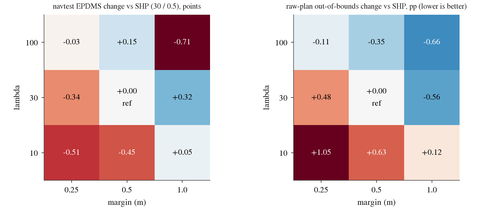
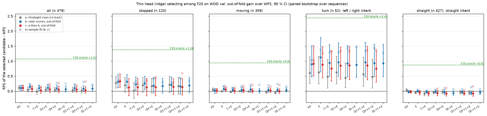
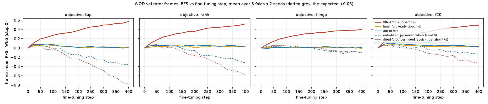